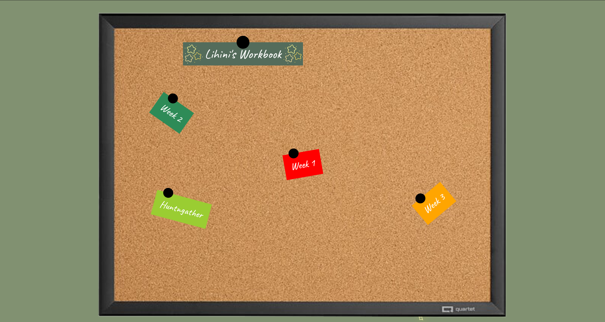
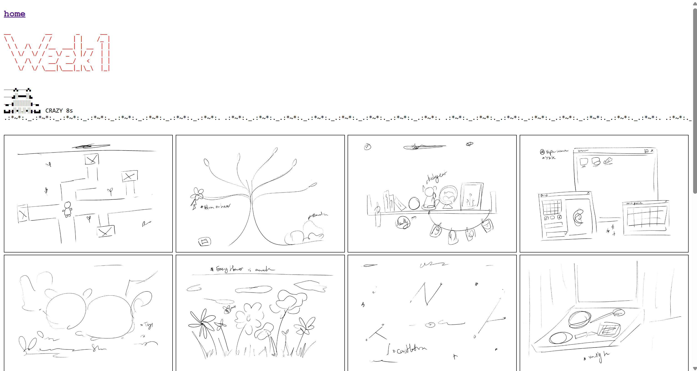
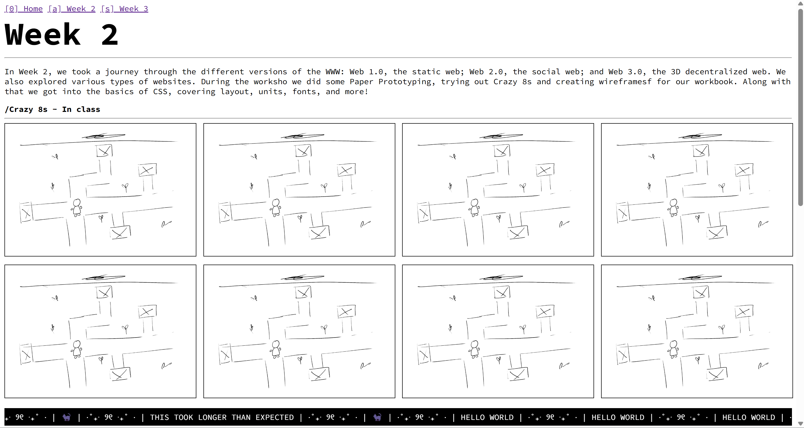
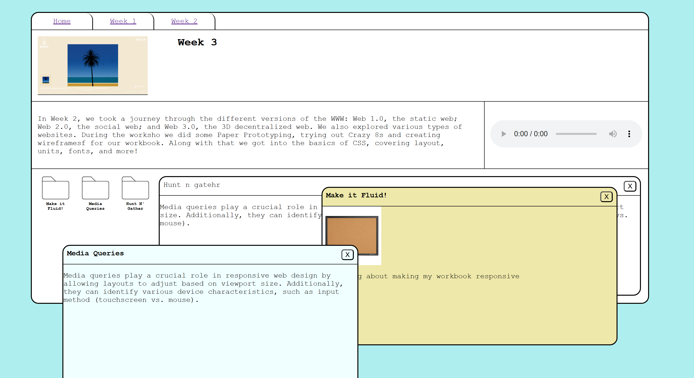
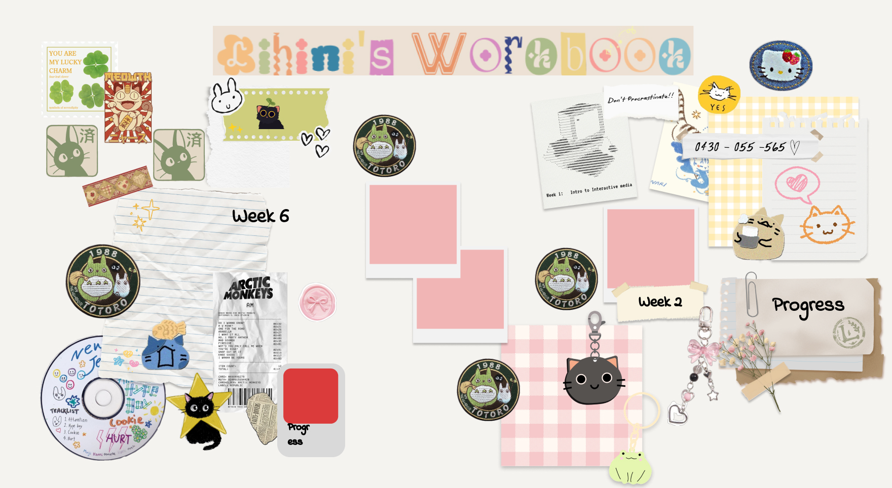
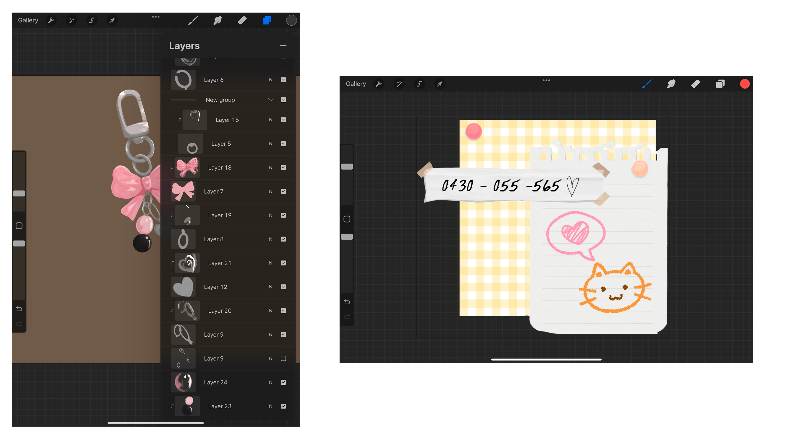

This is the sketch I chose as my initial idea from the crazy 8s we did in class.

Building on the initial sketch, I created several more iterations to further develop my idea.

Once I settled on a clear direction, I sketched a draft image for the homepage to visualise how I wanted it to appear.

Using the draft image as a reference, I attempted to code a basic homepage with HTML and CSS, incorporating PNGs for the background, to better conceptualise my idea.

Initially, I didn’t have a clear vision for Week 1, but I wanted to experiment with ASCII art. After several attempts, I managed to create an old-fashioned command prompt window look (which is the current design on the website) (homepage- item: doodle).

For Week 2, I aimed to keep the HTML simple, almost like a basic text document, while focusing on CSS practice. I particularly enjoyed creating a vibrant sunset gradient (homepage item: polaroid).

In Week 3, I began experimenting with JS and pop-ups. This page really helped me understand how to use divs, positioning, and other concepts. I feel like I can truly see my progress from Day 1 to the final Week 3 website.

After learning P5 and the feedback I got on my A1 I tried to incorporate more interactive elements into my A2. Week 4 was meant to look like scratch art kids used to do. I also started using more pages instead of keeping things on one page

Week 5 was a bit of a process. I tried out a bunch of things and ended up going with a MacBook-style look, with a girly/coquette vibe. It really helped me get used to placing things on the page in a structured manner.

Week 6 is probably my favourite design so far. I went for a bento grid style. I love the plant theme. The trickiest part was sorting out the measurements and tying the theme in with p5.

I improved the homepage quite a bit after A1. First, I loosely layered my idea on procreate with different assest

I improved the homepage quite a bit after A1. First, I rewrote the code and added divs for the objects. I used the drag code from Matilda’s GitHub to make it feel like you could customise the noticeboard.

I used Illustrator and Procreate to make most of the elements on the homepage. I also found a few assets online, like the Arctic Monkeys receipt, but most of it is hand-drawn or made by me.